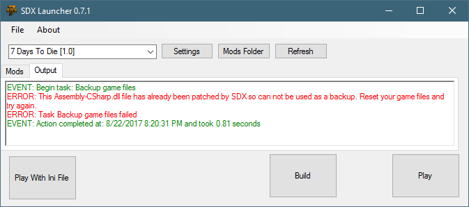
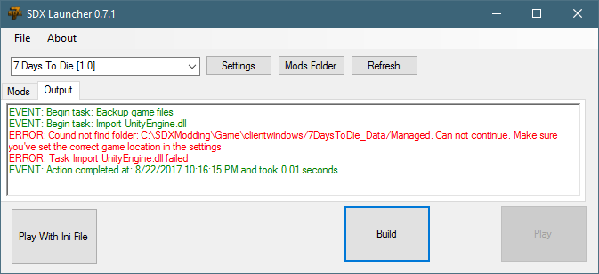

When you press the Build button, you get the following error:

This error gets displayed when you have no local back up of a vanilla file, and the Working folder has already been re-instrumented.
To Fix, follow the instructions in the Start off Clean section.
When you press the Build button, you get the following error:

This indicates that the Path specified in the Settings button isn't pointing to a 7 Days To Die folder.
To Fix, click on the Settings button, and navigate to a valid 7 Days To Die directory.
Created with the Personal Edition of HelpNDoc: iPhone web sites made easy